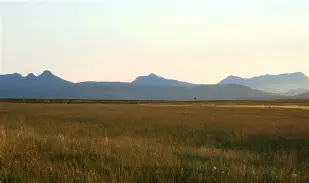
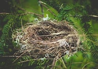
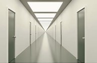
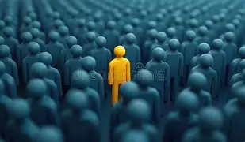
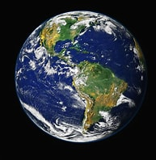

Spoken Word
Or press K to enable/disable

Without a given direction, there requires passion
Then fulfilling passions needs time and resource
Those who can't afford
Unable to go

An unrestricted system doesn't leave anywhere to go
A bird with nowhere to build a nest
They can only try their very best
But in the end

Their fate decided before they even started
Before anything had even begun
Birds who do have access to a nest
Are able to do their best
Built on passion, built on options, built on skillsets
The harsh reality, is it really all decided by you?
They say time and effort chooses your future
If things go wrong, the future predetermined

Are there really millions of options
The world filled with opportunities
When you lack the support to make them come true
There really isn’t anything left to brew

Even when you try something completely new
Being different, being uniquely you
Opening to adventures
While having to withstand the pressures

With the unseen potential, they think you’re mental
The sides you haven't shown, unaware that you’ve grown
Finding your passion, living your dream
Thinking it's a nightmare, can't see the gleam

Meaning rooted in your madness
Bringing your own version of happiness
But coming back to earth
Is it really all the worth?
Living and surviving in society
Becoming unacceptable, no room for variety
Being unable, incapable to redefine
When dealing with all the confine